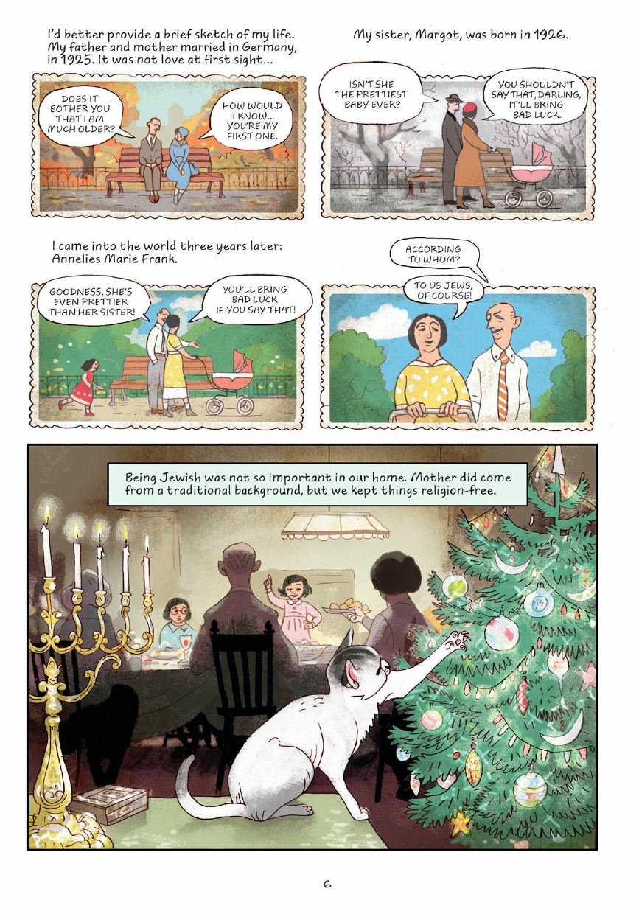

Your job
After World War I, people in many places faced hunger, lost jobs, or foreign rule. Some demanded change. Some dictators answered with terror.
Word help
- Reform = change some laws but keep the same rulers.
- Revolution = throw out the rulers and replace them.
- Independence = a colony rules itself.
- Stronger government = give leaders more power to restore order.
Read, check, and write
1. Russia: hunger and land
During World War I, millions of Russian soldiers died. At home, people ran short of food, and farmers wanted land. In 1917, crowds and soldiers rose up. The Tsar, Russia's ruler, was forced to give up his throne. Later that year, Lenin's Communists seized power.
2. India: a call to rule itself
Britain ruled India. About a million Indians served Britain in World War I, and many hoped for more say afterward. Instead, Britain kept control. In 1929, the Indian National Congress, the party Gandhi helped lead, set a new goal: purna swaraj, which means complete self-rule.
3. Ukraine, 1932–33: the Holodomor
Sourced history briefing. This is about real mass starvation. Read it carefully.
Joseph Stalin was the dictator of the Soviet Union, which included Ukraine. Starting in 1929, his government forced farmers to give up their own land and animals and work on big state-run farms. This is called collectivization.
In 1932, the government set grain quotas: amounts each village had to hand over. The quotas were far too high for villages that were already hungry. Officials searched homes and took food.
In January 1933, an order from Moscow banned farmers in Ukraine from leaving their villages to look for food.
Population experts estimate that about 3.9 million people in Ukraine died in the famine of 1932–33. Ukrainians call it the Holodomor, which means “death by hunger.”
The Soviet government denied there was any famine and turned down offers of help from outside.
A reporter was there. Welsh journalist Gareth Jones walked through Soviet villages in March 1933. The cry he heard everywhere: “There is no bread. We are dying.”
Sources: Holodomor Research and Education Consortium (HREC); Ptoukha Institute of Demography and Social Studies, Kyiv (3.9 million estimate); Gareth Jones, report in The Morning Post, March 30, 1933.
4. The Great Depression: hard times in Germany
In 1929, the stock market crashed in the United States. The economic crisis spread around the world. During the Great Depression, banks and businesses failed, millions of people lost their jobs, and many families struggled to afford food and housing. Governments faced pressure to help people. In Germany, the crisis made many people lose faith in their government. Adolf Hitler and the Nazi Party promised jobs and a stronger Germany, helping them gain support. But the Nazis also blamed and persecuted Jewish people.
Anne Frank: A Family Leaves Germany
Anne Frank was born into a Jewish family in Frankfurt, Germany, in 1929. During the Great Depression, Hitler gained support by promising jobs and change. As Nazi persecution grew, Anne's family moved to Amsterdam. Read the 10 illustrated pages below (graphic novel pages 6–15 — each page is labeled). Answer the checks as you read. Click a page to enlarge it.
